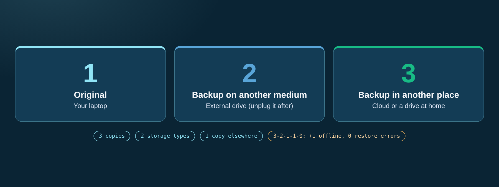

Backups
With a recent copy, a stolen laptop or ransomware is a bad day, not a disaster. Data disappears through theft, broken drives, spilled coffee, or ransomware that locks your files and asks for money.

The 3-2-1 backup rule ensures data resilience across multiple media and locations.
The 3-2-1 rule
| Number | Meaning |
|---|---|
| 3 | Copies of your data |
| 2 | Different types of storage media |
| 1 | Copy in another place (e.g., cloud) |
Modern version 3-2-1-1-0: also keep 1 copy offline, and check for 0 errors by testing a restore.
Example
A student's laptop is stolen two weeks before a deadline. With a cloud backup, the thesis is back in minutes on a new computer.
Quick tips
- Turn on automatic backup on phone and laptop.
- Unplug the external drive after backing up.
- Test restoring a file once a month.
Source: AvePoint (3-2-1-1-0); NCSC Switzerland